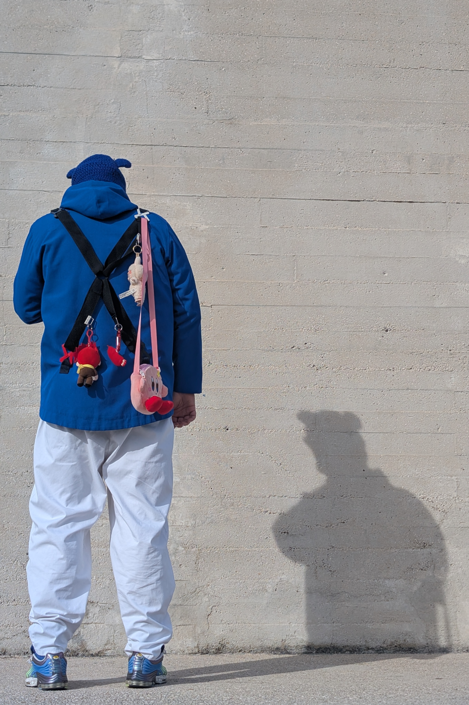
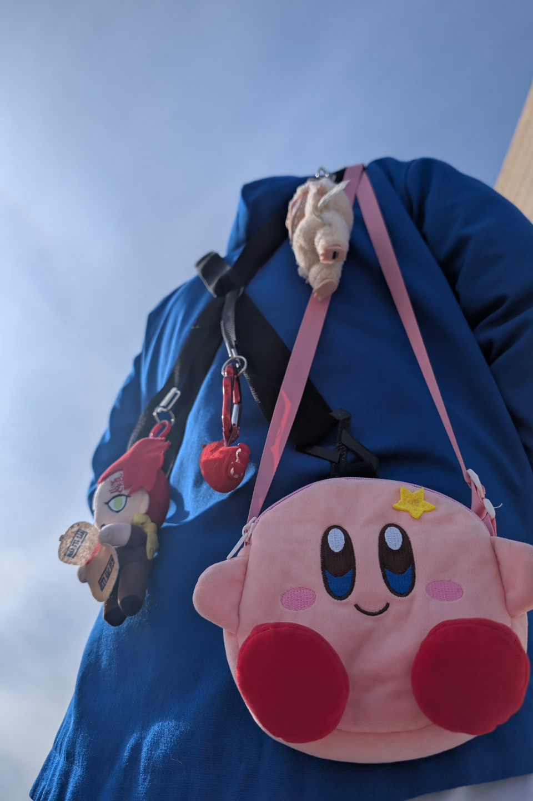
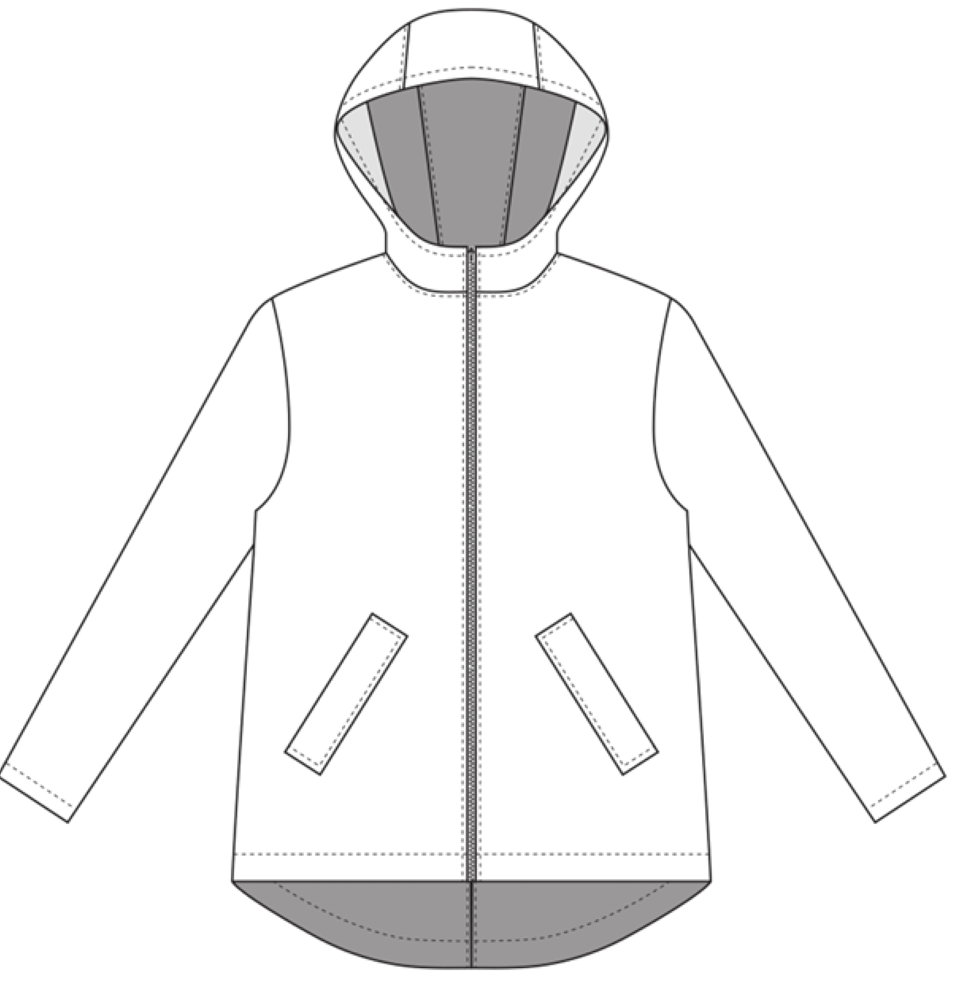

La veste Fa Bene dispose de 4 attaches au dos, celles-ci pourront permettre d’accrocher tout ce que l’utilisateur désire. Le but est simple, permettre à chacun d’avoir une veste unique et à son image.
Il sera possible d’attacher sur les vestes Fa Bene des attaches inspirées d’anneaux de porte-clés en forme de B. Celles-ci représentent l’entrée vers des possibilités de personnalisation infinies !
Le modèle est déclinable en deux couleurs. En Bleu et en Noir.
HISTOIRE VISION VALEUR
Mission :
Dans un marché de la mode saturé de choix, où tout change constamment en suivant les tendances, déformer la BBeauté traditionnelle permet la création de styles uniques, permettant à chacun d'exprimer sa propre originalité.
L’amBBition de Fa Bene est d’offrir un moyen d’expression infini et duraBBle via des vestes personnalisables à l’aide d’attaches. En d’autres termes, chaque pièces créée sera donc unique et à l’image de la personne qui la porte.
”C’est parce que j’ai considéré le vêtement comme mon seul et unique refuge et moyen d’expression que je veux en fournir à tous ceux qui n’en ont pas.”
Valeurs :
En encourageant la liberté de style de chacun ce projet valorise la créativité, l’authenticité et l’intégrité de chaque être humain.